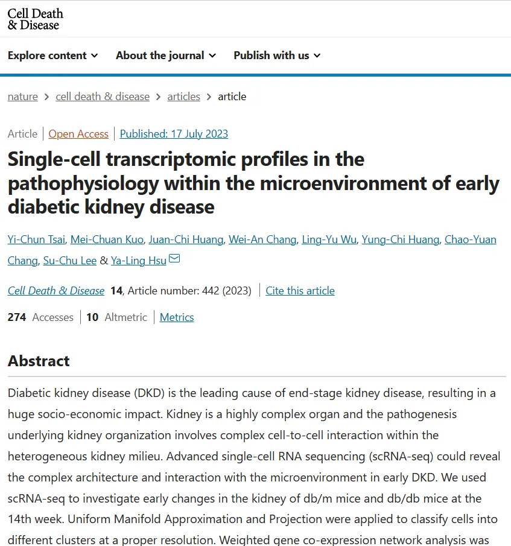
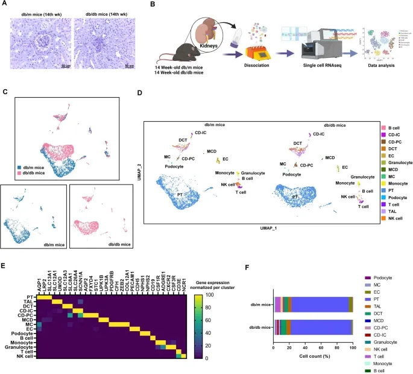
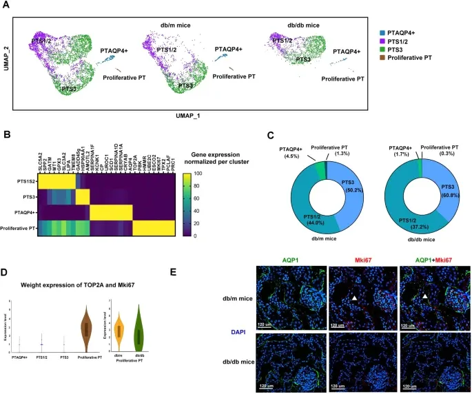
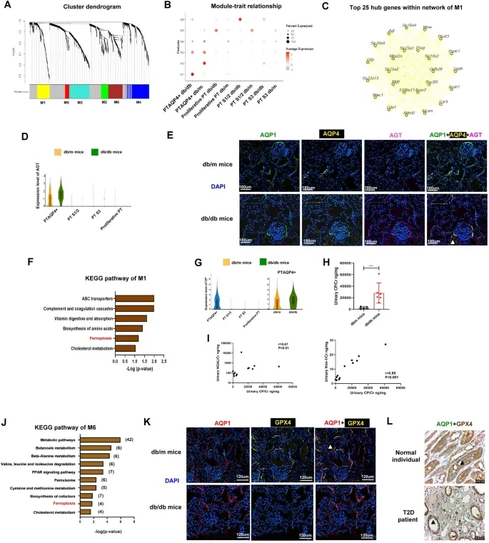
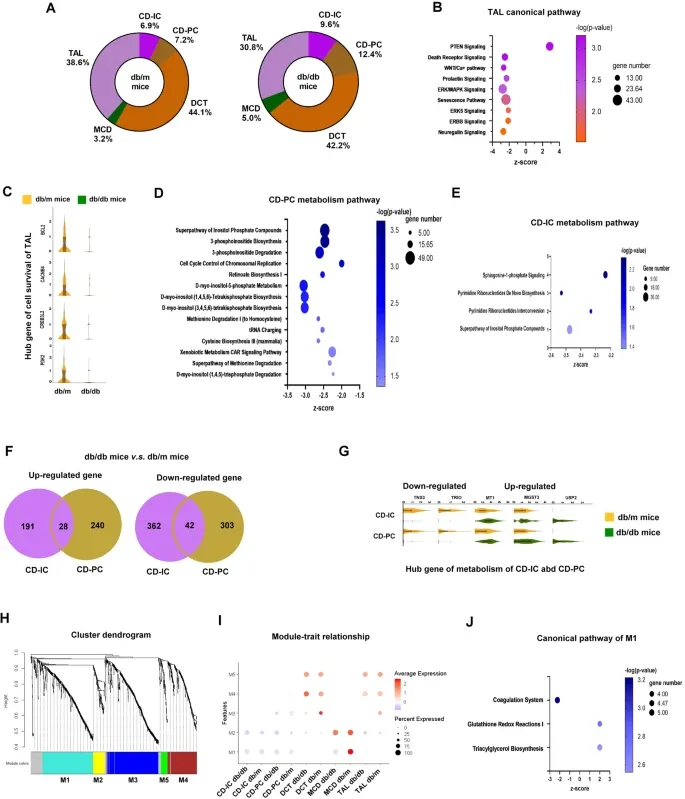
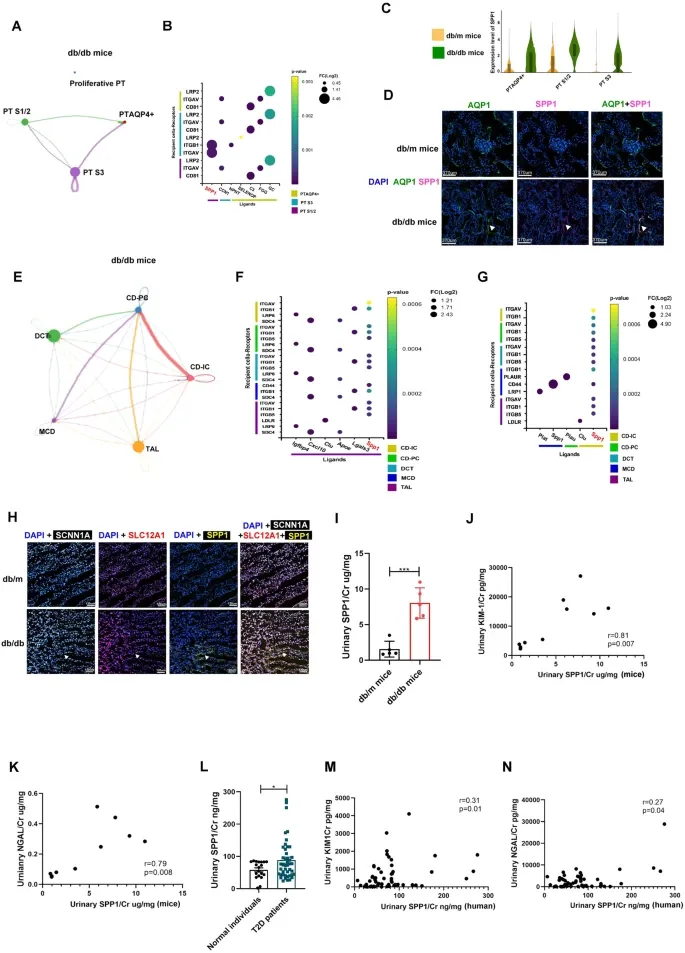
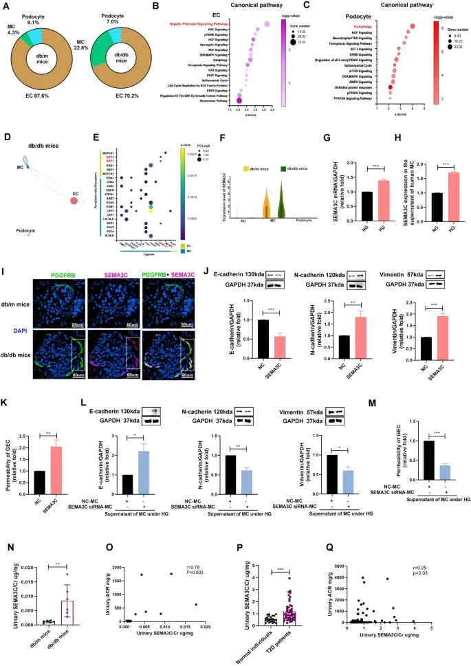
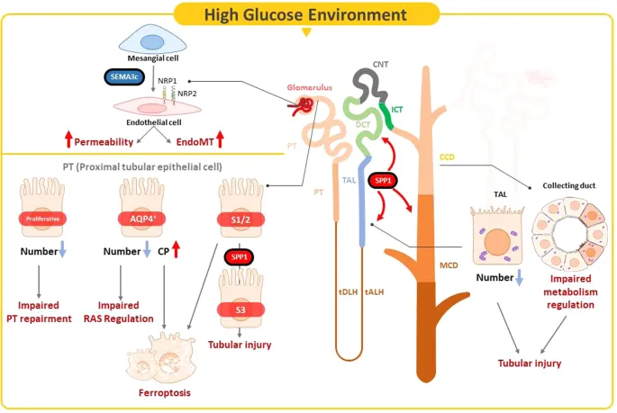

scRNA-Seq+WGCNA+铁死亡：IF=9.69
原文：https://mp.weixin.qq.com/s?__biz=MzAwMzIzOTk5OQ==&mid=2247503498&idx=1&sn=fcf38bd6fd1dbaf80e203926bb63d5c4&chksm=9b3cb7daac4b3ecca9f2dd590fc581f5b1ae67a7f89be6f76eb438a017b5c335d8a01830b6a5#rd 合集：单细胞教程全收录 / 文献速递
写在前面
随着scRNA-Seq的成本不断走低，这项原本高门槛的技术也逐渐流向更多的课题组。与此同时，这也意味着scRNA-Seq不再能够轻松等同于高分文献，scRNA-Seq的文章现在需要精巧的分析思路设计 与足量的实验补充。今天分享的发表于《Cell Death & Disease》上题为"Single-cell transcriptomic profiles in the pathophysiology within the microenvironment of early diabetic kidney disease"的这篇文章就蹭上了热点铁死亡并完成了大量的补充实验 。

主要内容
细胞分群结果
DKD的背景知识就不给大家再介绍了，感兴趣的同学可以参考这里：一文了解DKD。在组织切片的PAS染色(Figure 1A)中可以明显观察到系膜扩张(DKD的病变现象之一)，作者选取了3只db/m与3只db/db进行了scRNA-Seq(Figure 1B)。经过数据处理后(教程可参考:scRNA-Seq学习手册2023_R语言版)，共获得了14种 不同的细胞类型(Figure 1-D):proximal tubule (PT; AQP1, LRP2, SLC13A1), thick ascending limb (TAL; SLC12A1, UMOD), distal convoluted tubule (DCT; SLC12A3, SLC8A1), connecting tubule-intercalated cell (CD-IC; SLC26A4, SCNN1A), connecting tubule-principal cell (CD-PC; AQP2, FXYD4, STC1), medullary collecting duct (MCD; UPK1B, UPK3A), MC (PDGFRB, CFH, ZEB2, COL12A1), podocyte (NPHS1, NPHS2), EC (PECAM1, CDH5), B cell (CD19), T cells (CD3E), NK cell (NCR1), monocyte (CSF1R, ADGRE1), and granulocyte (CXCR2, CSF3R)。这些细胞的marker可见Figure 1E，细胞比例可见Figure 1F(教程 可参考：沉浸式统计细胞比例)。考虑到这里的细胞数量不多(6个样汇总后共6633个细胞)，因此作者关于细胞比例变化的讨论我们在此忽略。。

Figure 1 近曲小管作为肾脏数量最多的细胞类型，其亚群分析一直是肾脏scRNA-Seq的热点，作者对这部分细胞进行了再分群，鉴定出了PTS1/2(这里吐槽一下，为什么不分为PTS1和PTS2)、PTS3、PTAQP4+、proliferative PT这四种亚群(Figure 2A)。它们的marker分别为：PTS1/2 (SLC5A2, SPP2, GATM, MT1, GPX3, SLC3A2, LIPA, TMEM8), PTS3 (GADD45G, HSP90AA1, AMOTL2), PTAQP4+ (SERPINA1F, KCNK1, CP, UROC1, SCD1, SERPINA1D, SERPINA1A, CRYAB, AQP4), proliferative PT (TOP2A, PBK, HMMR, UBE2C, ESCO2, MKi67, TPX2, PCLAF, PRC1) (Figure 2B)。可以发现，proliferative PT与PTAQP4+在DKD组小鼠数据中明显降低。TOP2A与MKi67这两种与细胞增殖相关 的marker也被发现在proliferative PT中表达且在db/m中的表达水平更高(Figure 2D)，这一现象也在免疫荧光 中得到了证实。

Figure 2
WGCNA分析
weighted gene co-expression network analysis(WGCNA，教程可参考:一文搞定单细胞/空间转录组的WGCNA分析)发现了不同PT细胞具有一定的特征表达模块 ：其中module 1(M1)与特殊的细胞类型—PTAQP4+呈正相关，M6与PT1/2呈正相关(Figure 3A-B)。其中AGT基因作为renin-angiotensin system(RAS)的重要组成分子，在dbdb的PTAQP4+中表达量明显上升(Figure 3D)，免疫荧光的结果也支持这一发现(Figure 3E)。

Figure 3
DKD微环境中PT的铁死亡现象
在对module1的KEGG富集分析中，一个令人眼前一亮的通路出现了——铁死亡Ferroptosis(Figure 3F)。作为铁死亡的关键基因，作者发现Ceruloplasmin(CP)在PTAQP4+中特异性表达 ，且在db/db小鼠中表达量更高(Figure 3G)，尿液中的检测结果也同样符合这一趋势且与尿液中的其它两个肾脏损伤指标：KIM-1/Cr、NGAL/Cr呈反比。此外，在与PTS1/S2相关的M6中，铁死亡通路同样被富集（Figure 3J）。铁死亡的另一个关键分子GPX4 在小鼠的免疫荧光(Figure 3K)与临床样本的免疫组化(Figure 3L)中展现出了相同的趋势。综上，作者认为铁死亡通路在DKD的肾小管损伤进程中展现出了调节作用。
TAL与CD 在db/db小鼠的数据中存在明显的TAL细胞数量下降与CD细胞比例的提升(Figure 4A)。TAL的组间差异基因IPA富集分析显示其在db/db小鼠中与细胞生存相关信号通路呈现负相关的关系(Figure 4B)。该中的BCL2、CACNB4、CREB3L2、PDK2在dbdb小鼠的TAL中均呈现出下调趋势(Figure 4C)，意味着TAL在DKD进程中可能存在着细胞死亡。在收集管部分，CD-PC的差异基因在DKD进程中与磷酸肌醇、蛋氨酸和半胱氨酸的生物合成和降解等代谢相关 通路呈现负相关 的关系(Figure 4D)。CD-IC的差异基因在DKD进程中则与磷酸肌醇、蛋氨酸和半胱氨酸的生物合成和降解、磷酸萘醌和嘧啶核糖核苷酸的生物合成呈负相关 的关系(Figure 4E)。CD-PC与CD-IC的差异基因也呈现出一定的交集(Figure 4F)。作者对TAL、DCT、CD均进行了WGCNA分析(Figure 4H)。M1 展现出了与medullary collecting duct (MCD)的负相关关系，且与谷胱甘肽氧化还原反应和甘油三酯生物合成代谢通路相关。

Figure 4
SPP1介导PT亚群间的细胞通讯 又到了单细胞分析的传统曲目——细胞通讯(教程可参考：《细胞通讯》CellChat学习手册)，作者这里采取了严格的筛选标准：配受体对的差异倍数超过2 者被认为是具有组间差异的互作关系。结果显示，C3-CD81、FGG-ITGAV、GC-LRP2配受体在dbdb小鼠中具有更高的互作活性(Figure 5A-B)。SPP1 基因作为VDR/RXR 的激活配体在db/db组的PTAQP4+、PT S1/2、PT S3中均表现出了上调的趋势(Figure 5C-D)。在剩余的肾小管细胞中，SPP1相关通路同样可以被观察到，CD-IC可以与剩余的四种肾小管类型通过SPP1发生互作(Figure 5H)。SPP1/Cr的值在db/db组的尿液中明显高于db/m组(Figure 5I)，并与NGAL/Cr、KIM-1/Cr呈现出正相关的关系(Figure 5J-K)。最重要的是，这些现象均可以在临床样本中被重复(Figure 5L-N，工作量真不小啊)。这些证据均表明肾脏的近曲小管与远曲小管间存在着以SPP1介导为主的细胞通讯，且在DKD进程的肾小管损伤中具有相关性。

Figure 5
** **肾小球部位的细胞通讯
从细胞数量上来看，足细胞与EC的数量在db/db中更低 ，而MC却有所上升(Figure 6A)。EC的组间差异基因多富集于纤维化信号通路(Figure 6B)，而足细胞多富集于自噬 、细胞生存与死亡相关通路(Figure 6C)。在细胞通讯分析的结果中，足细胞与EC可以通过SEMA3C -NRP1/NRP2进行互作(Figure 6D-E)，这一基因在db/db小鼠(Figure 6F)、以及小鼠MC(Figure 6G)、人类MC高糖培养环境(Figure 6H)下均呈现出上升状态 。PDGFRB阳性 的MC同样拥有更高的SEMA3C表达，着可能意味着这一基因与内皮细胞的间充质转化有关(Figure 6I)，并造成了其通透性提升(Figure 6J)。在通过siRNA 降低SEMA3C的表达后，MC在高糖环境中通透性降低的现象被阻遏(Figure 6LM)。作者同样也检验了这一基因与NGAL/Cr、KIM-1/Cr分别在小鼠与人类尿液中的相关性(Figure 6N-Q)。

Figure 6
最后聊聊
最后聊聊，不得不说，这是一篇工作量很大的文章，原本跑马灯式的分析各个细胞是个大忌，但作者通过一次又一次一的实验验证 与临床样本 补充实验证明了其在每一种细胞中发现的DKD关键基因/通路(Figure 7)。细胞培养、ELISA、qRT-PCR、WB、IHC、siRNA转染等实验是一样没落。此外，作者还在PT的差异基因通路中富集到了铁死亡通路 ，可谓是抓住了学术的热点，并且丝毫不刻意。如果说一定要吐槽，差异基因、细胞比例差异的显著性 作者是一点儿都没聊。并且作为sc RNA-Seq数据，数据中居然有足细胞(通常情况下，scRNA-Seq无法捕获到足够的足细胞，但sn RNA-Seq不存在这一弊端)。不过这篇文章的数据作者并没有公开 ，Methods中也未曾记录scRNA-Seq依托的平台，给我留下了一丝丝的遗憾。

Figure 7
如何联系我们

 公众号后台消息更新不及时，超过48h便不允许回复读者消息，这里给大家留一下领取资料、免费服务器(有root权限的共享服务器,空空的计算节点任意穿梭)的微信号[Biomamba_yunying] ，方便各位随时交流、提建议(科研任务繁重，回复不及时请见谅，备注来意会优先通过)。此外呼声一直很高的交流群 也建好了，欢迎大家入群讨论：永久免费的千人生信、科研交流群
公众号后台消息更新不及时，超过48h便不允许回复读者消息，这里给大家留一下领取资料、免费服务器(有root权限的共享服务器,空空的计算节点任意穿梭)的微信号[Biomamba_yunying] ，方便各位随时交流、提建议(科研任务繁重，回复不及时请见谅，备注来意会优先通过)。此外呼声一直很高的交流群 也建好了，欢迎大家入群讨论：永久免费的千人生信、科研交流群
大家可以阅读完这几篇之后添加给生信入门初学者的小贴士 如何搜索公众号过往发布内容

 您点的每个赞和在看，我都认真当成了喜欢
您点的每个赞和在看，我都认真当成了喜欢